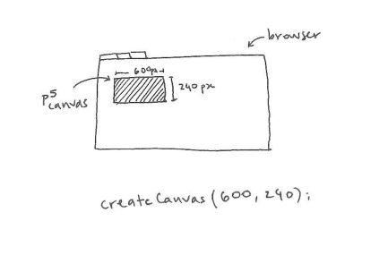
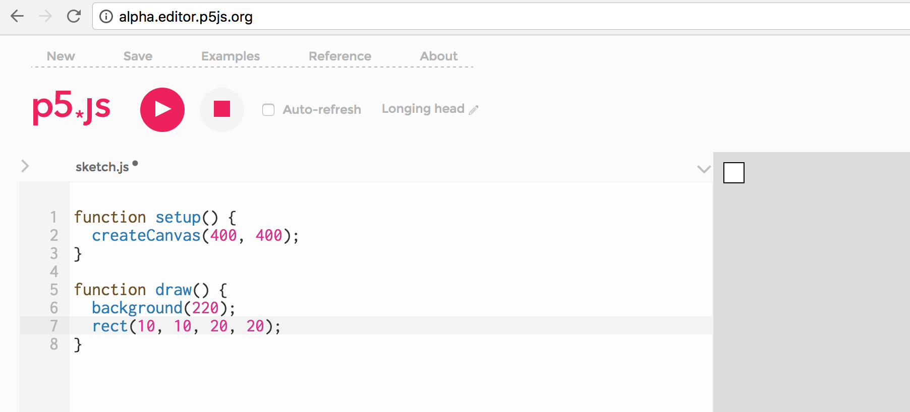
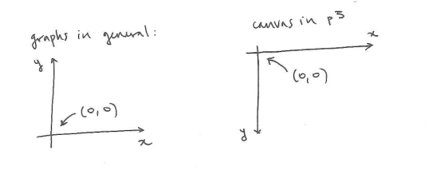
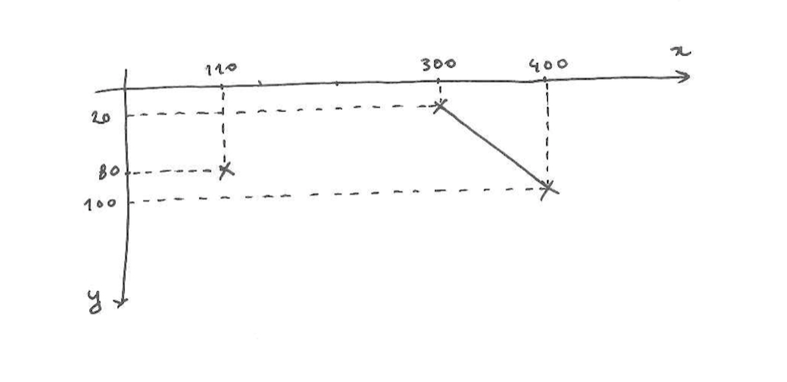
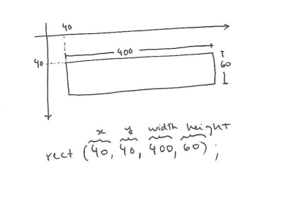
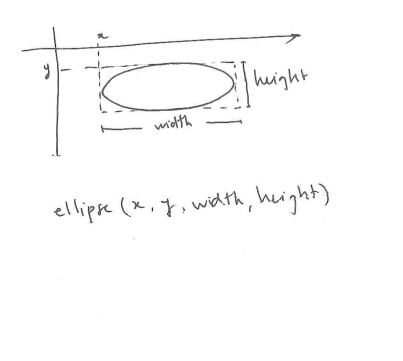
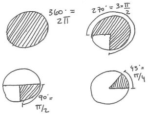

1) Create a Canvas.

The gray square under this paragraph is a p5.js "canvas". It is 600 pixels wide and 240 pixels high, and was created by the code below it, which also sets the background color.
Test this code yourself by copying and pasting it into the p5 web editor and clicking the pink play button. Here is a guide on getting started with the p5 editor.

Then make some changes to the code. Try replacing createCanvas(600, 240) with:
createCanvas(100, 20);createCanvas(1000, 60);
Set the background to different shades. 0 is black, 255 is white; the numbers in between go from dark to light shades of gray:

As you can see, the lines with a '//' before them are grayed out. These are comments. You can use them as notes to yourself: they are ignored by the interpreter that runs the program, so they will not affect how it works.
If your program does not behave as you expect, it is useful to turn off lines of code one by one by 'commenting them out' (adding '//' to them). This will help you determine which one is causing the problem.
2) Draw points and lines.
To draw on the canvas, call p5.js functions like point and line.
A point is defined by an (x, y) coordinate. A line is defined by its start and end points. In the graphs we are used to, the y-coordinate grows upward; in p5's canvas, it grows as we move down the screen.


Try the following on the p5 online editor:
- Draw a point near the top-right corner of the canvas.
- Draw a point in the middle of the canvas. Draw a point near the bottom-left.
- Draw a horizontal line, a vertical line, a diagonal line.
- Draw a line from the top-left corner to the bottom-right corner.
3) Draw shapes (+ drawing order).
p5 has many built-in functions to draw different shapes. In the example below, we are drawing a rectangle. The rect function takes four parameters: x, y, width and height.

Tip: To help you place shapes where you want them on the canvas, you can add the following line to your code:
text(mouseX + ", " + mouseY, 20, 20). Take a look at the example below. You can move your mouse to where you would like your shape to be, and write down the coordinates to use them as parameters in your function call.
Now draw an ellipse. Its parameters are the same as for the rectangle. For details, see the documentation for the ellipse function here, .

Your ellipse might overlap with your rectangle, like in the example below. Because the code in your sketch is executed from the top down, one line at a time, the shape that was drawn last will always be on top of the rest.
To change the drawing order, simply cut the line ellipse(335, 50, 50, 50);and paste it before the line rect(40, 40, 400, 60);.
4) Draw more shapes.
Try drawing a
triangle,
a quadrilateral,
an arc, and a
shape defined by its vertices.
To see what other functions exist and what their parameters are, take a look at the Shape list in the p5 online documentation.
You might notice the last parameter of arc in the code reads PI/4. In p5, by default, the unit of measurement for degrees are radians. PI is equivalent to 180 degrees; 2*PI is 360 degrees, PI/2 is 90 degrees, and so on.

HALF_PI is the same as PI/2, but it has already been calculated, so it saves your sketch some computing time. Try these:
arc(90, 60, 80, 80, 0, HALF_PI);arc(190, 60, 80, 80, 0, PI+HALF_PI);arc(290, 60, 80, 80, PI, TWO_PI+HALF_PI);arc(390, 60, 80, 80, QUARTER_PI, PI+QUARTER_PI);
If you would rather work with degrees and not radians (90 instead of PI/2), add this line to your code: angleMode(DEGREES). Then you can use degrees as parameters to the arc function:
angleMode(degrees); arc(390, 60, 80, 80, 45, 90);angleMode(degrees); arc(390, 60, 80, 80, 45, 90);angleMode(degrees); arc(390, 60, 80, 80, 45, 90);angleMode(degrees); arc(390, 60, 80, 80, 45, 90);
5) Change the shade and stroke of your shapes
You might have noticed this: if you don't change anything, your shapes are drawn with a white fill, and a thin, black stroke. To change these, you can use the fill and stroke functions. When given one parameter, fill is set to a shade of gray between 0 (black) and 255 (white). You can also change the weight of the stroke:
6) Create a composition.
Now make your own drawing. Here is an example: